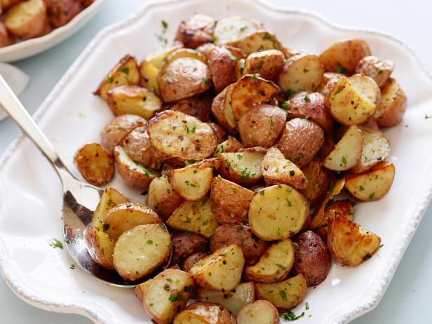

Oven Roasted Potatoes

Description
These delicious oven roasted potatoes are very
easy to make and can add a rustic element to
any meal!
Ingredients
- Small potatoes
- Garlic
- Olive oil
- Salt and Pepepr
Steps
- Preheat oven to 400 degrees Fahrenheit
- Mix together oil salt pepper and garlic in mixing bowl
- Add potatoes and mix so that they are evenly coated
- Bake for 22-24 minutes